Chapter 2: Creating a Die Roller Scene
In this part, we will be creating a Scene in Unity that allows us to roll different sided dice. Before starting, be sure you’ve completed Chapter 1: Modeling a Die and that all of your tests are passing.
Table of contents
- 01. Create a Scene
- 02. Setup Screen Dimensions
- 03. Adding a Button to the Scene
- 04. Adjusting the Canvas
- 05. Positioning the Button
- 06. Sizing the Button
- 07. Creating a DieController
- 08. Adding a DiceController to the Scene
- 09. Rolling on Button Click
- 10. Generalizing the DieController
- Good Time to Commit
- Challenge: Create a Set of Dice
- What’s Next?
01. Create a Scene
A Scene in Unity is where you work with part of a game or application. In this section, we will create a Die Roller Scene that allows the user to click on buttons to roll dice with varying sides.
- Open the
Scenesfolder. - Right click and select
Create>Scene - Rename the Scene to be
Die Roller - Double click to open the
Die Rollerscene.
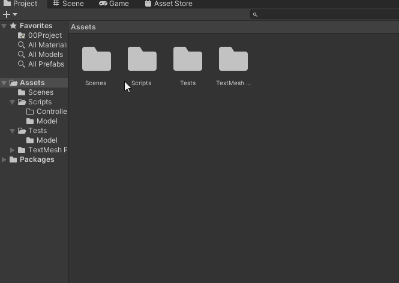
- Verify that you have the
Die Rollerscene open. In theHierarchyview, you should seeDie Rollerat the very top.
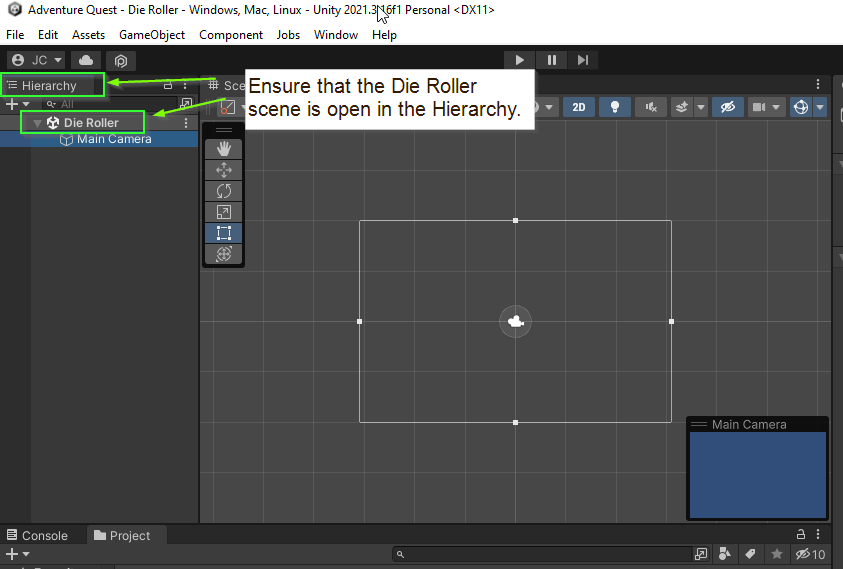
02. Setup Screen Dimensions
To make our lives a little easier, we will limit our game to use a standard monitor aspect size: 16:9. This is an aspect ratio and it means that for every 16 pixels wide, the screen is 9 pixels tall. This is a common screen resolution and includes HD (1920x1080) and 4K UHD (2840x2160).
Note: By default, Unity selects a Free Aspect which means it will try to accommodate ANY screen size. As awesome as this might sound, it turns out to be a bit of a challenge to make it work in practice.
- Click the
GamePanel - Click the
Aspect Drop Down(It probably says Free Aspect) - Select
16:9 Aspect
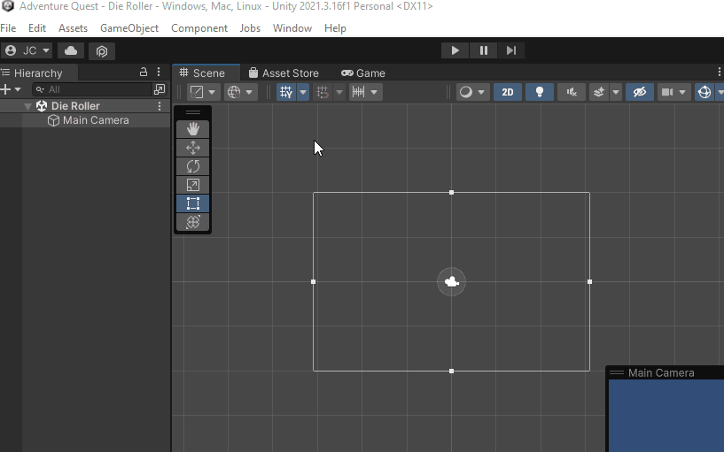
- Finally, return back to the
Scenepanel.
03. Adding a Button to the Scene
Next, let’s add a Button to the scene.
- Right click in the hierarchy
- Select
UI>Button - TextMeshPro

After a moment, you will likely see a massive button appear in the Scene along with several items in the Hierarchy: A Canvas, a Button, a Text, and an EventSystem.
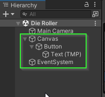
A Canvas is Unity’s main way for adding HUD / UI elements to the game screen. The EventSystem is the way Unity tracks user clicks / interactions with the Canvas. Finally, the Button is the actual button on the screen and the Text is the text that is displayed within the button.
04. Adjusting the Canvas
So… how do we make the button look reasonable?
There are a few things happening here. By default, a Canvas is set up to render over an entire screen rather than onto the scene directly. This is important in 3D games as well as 2D games that go outside of the bounds of what the player sees. What would it mean to have the canvas be in the game world?
Instead, the Canvas renders on top of what the player sees. If you were to click to the Game panel, you would see the Button how it would appear to the user. If you’re lucky, you will see the button somewhere on the screen. However, this will be dependent on the size of the Game panel itself. If you drag the screen around, you will see the button position on the screen move about.
- Open the
GamePanel - Resize the window to see the button move
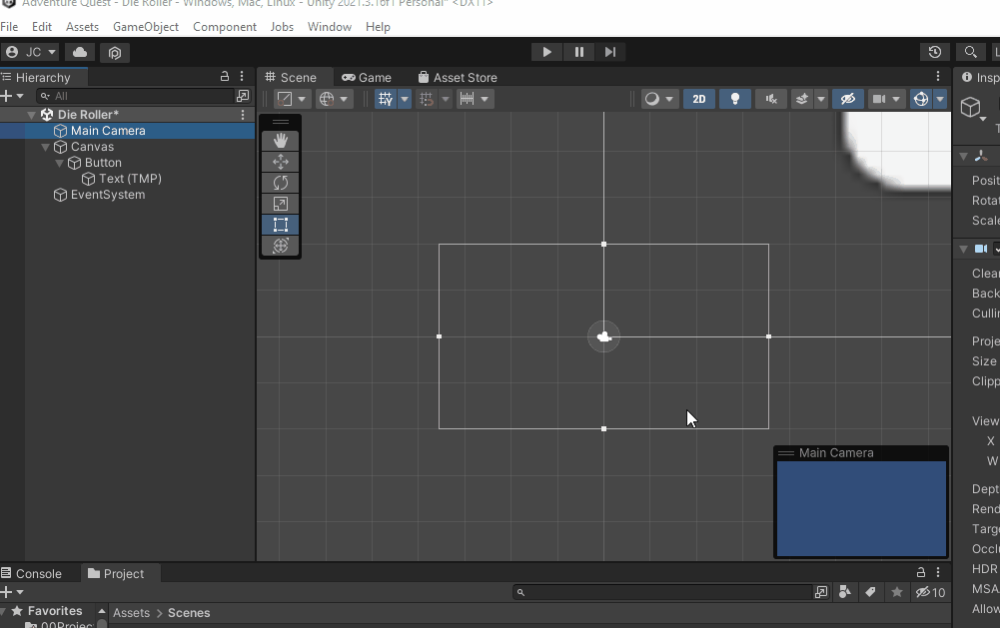
What is happening?
The default behavior of the canvas is to maintain a constant pixel size. This means that, although the aspect is remaining constant, the size of the button and the text will always have the same size. If we select the Canvas in the Hierarcy, We can see this in the Inspector panel under the Canvas Scaler section.
- Click the
Canvasin theHierarchy - Open the
Inspectorpanel. - Find
Canvas Scalerin theInspectorpanel.
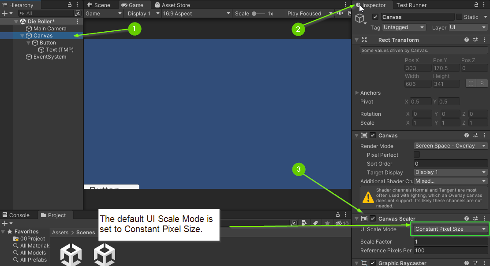
How do we fix it?
For this scene, we would like the Canvas to scale to the size of the screen.
- Set
UI Scale Modeto beScale With Screen Size - Set the resolution to be
1920x1080(this is a 16:9 aspect)
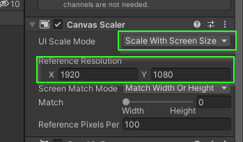
As you do this, you should see the Button adjust its position on the screen. However, if you resize the Game panel, the button scales to match the new resolution!
05. Positioning the Button
If you return to the Scene panel, you will still see that the Canvas is massive compared to the scene. If you double click the Canvas in the Hierarchy, the Scene view will zoom out and center the Canvas within the panel. In fact, double clicking on any component in the Hierarchy will center it in the Scene panel.
- Double click on the
Canvasin theHierarchy - Double click the
Main Camerain theHierarchy
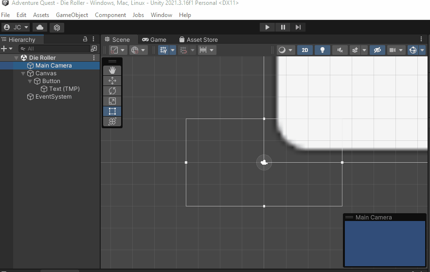
With our Canvas visible, let’s adjust the button to be at the bottom of the screen with a reasonable size.
- Select the
Buttonin theHierarchy - Find the
Rect Transformcomponent in theInspectorpanel. - Click the Anchors icon
- Select
BottomandCenter
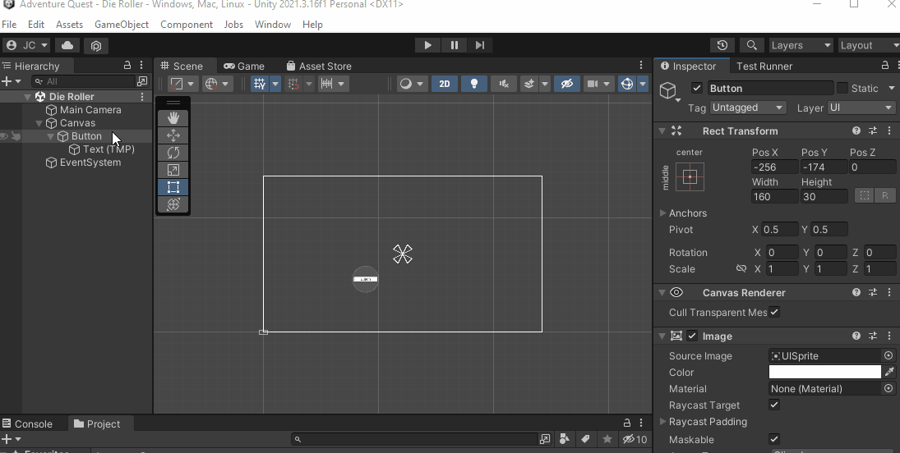
This updates how the Pos X and Pos Y properties are displayed. This makes them relative to the Bottom and Center position on the Canvas
- Next, update the
Pos XandPos Yto be 0
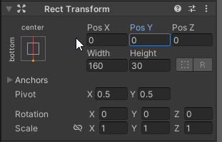
Because the anchors are set to the bottom and center of the screen, this centers the button at that point.
This isn’t quite what we want. You’ll notice that the bottom half of the button is now off the screen. This is because the Pivot of the Button is set to be the center point of the Button. We can adjust it to be the bottom of the button by changing the Pivot’s Y to 0.
- Set the Pivot to 0
- Update
Pos Yto be 0
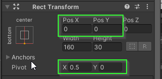
If all went well, your button is now at the bottom center of the screen. If you’d like to give it a little padding, you can set Pos Y to be slightly positive.
06. Sizing the Button
By default, Unity sets a button to be 160 pixels wide and 30 pixels tall. Because we have set our canvas to have a size of 1920x1080 the button appears quite small on the screen. Let’s update the size!
- Set the buttons width to be 300
- Set the buttons height to be 200
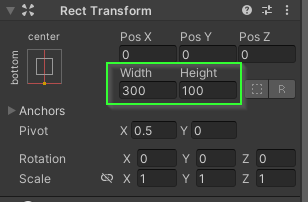
Because we have set the anchors and pivot to be the bottom center of the canvas, the button scales up and remains centered at the bottom of the screen.
However, the text did not change size. This is because the Text is its own component in the scene that happens to be nested within the Button.
- Select the
Textfrom theHierarchy - Find the
TextMeshProcomponent in theInspector- You may have to scroll down to find it.
- Change the Text from
ButtontoRoll Die! - Change the
Font Sizeto be72.
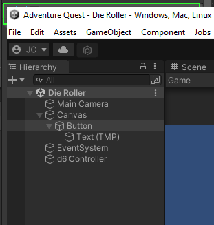
If all went well, the text on your button is now legible!
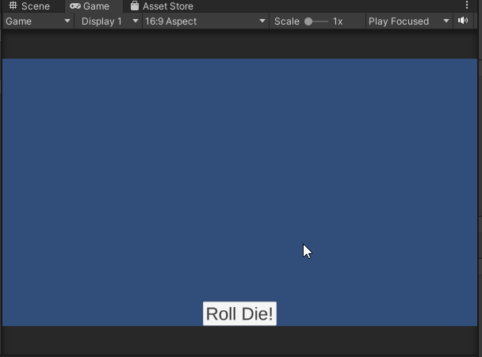
07. Creating a DieController
Next, we want to make the button do something! To do this, we will create a MonoBehaviour called DieController.
- Open the
Scripts/Controllerfolder - Right click
- Select
Create>C# Script - Name the script
DieController - Double click to open the script
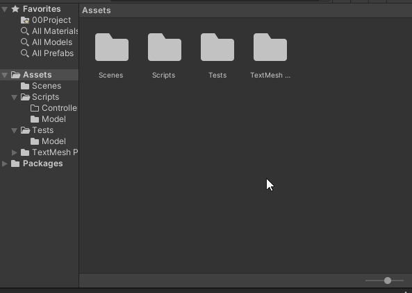
We will use a DieController to… well… control a Die. More specifically a DieController defines how a Die interacts with a Scene.
- Update your
DieControllerscript:
using UnityEngine;
namespace AdventureQuest.Dice
{
public class DieController : MonoBehaviour
{
private Die _die;
}
}
- Because the
DieControlleris tightly coupled with theDieclass, we will add it to theAdventureQuest.Dicename space. - To be able to attach a
DieControllerto ourButton, it must be aMonoBehaviour. - Additionally, because a
DieControllercontrols aDiewe add aDiefield.
Notice: we have specified that the _die field is private. This means that the _die variable will only ever be accessed within this file preventing us (or our dev-team) from accidentally writing a bug that modifies / uses it in some way. Additionally, the naming convention for private fields in C# is to prefix with an underscore (_) and use camelCase.
- Add a
Start()method which initializes_dieto be a 6 sidedDie.
public class DieController : MonoBehaviour
{
private Die _die;
void Start()
{
_die = new Die(6);
}
}
The Start() method is a “magic” method that Unity looks for on MonoBehaviours. If one exists, it will be called WHEN the MonoBehaviour enters the scene (when it “starts”). This acts similar to a constructor for MonoBehaviours and gives us an opportunity to initialize it. In this case, we initialize the variable to be a new Die with 6 sides.
- Add a Roll method which rolls
Dieand reports the result usingDebug.Log
public class DieController : MonoBehaviour
{
// omitted for brevity
public void Roll()
{
_die = new Die(Sides);
Debug.Log($"Rolled a {_die.LastRolled}");
}
}
The above method calls the Die.Roll method which causes the state of the Die to change. Then, using Debug.Log displays the result of the roll in Unity’s console. All that is left to do is connect it to our button!
08. Adding a DiceController to the Scene
Let’s add a DieController to the scene.
- Right click in the
Hierarchypanel - Select
Create Empty - Rename the Game Object
d6 Controller
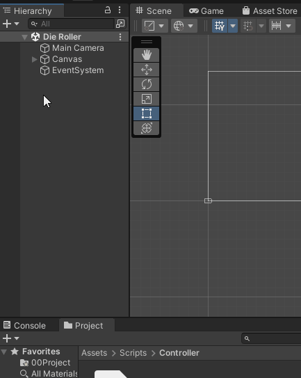
- Select the
d6 Controllerin theHierarchy - In the
Inspectorpanel clickAdd Component - Search for
DieController - Select
DieController
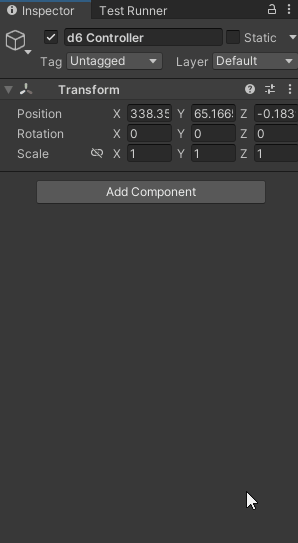
If all went well, a Die Controller component is now visible in the inspector.
09. Rolling on Button Click
Next, we need to attach the Roll method to the Button’s OnClick event.
- Select the
Buttonin theHierarchy - In the
Inspectorpanel, find theButtoncomponent (you may need to scroll down)
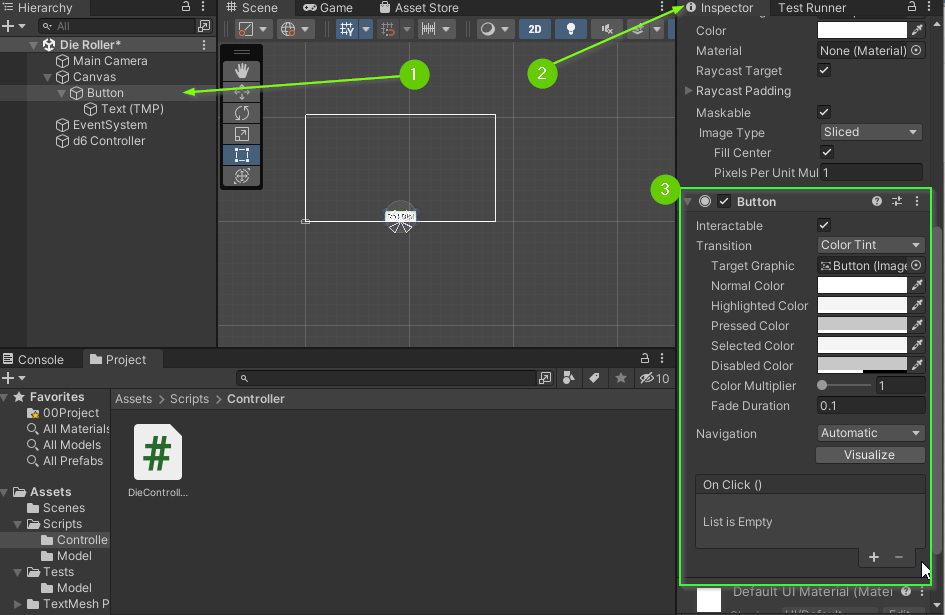
At the bottom of the Button component, you will see a box labeled OnClick(). This is a UnityEvent that GameObjects can “listen” to and be notified when the button is clicked.
- Click the
+icon on theOn Click ()event to add a listener - Drag the
d6 Controllerfrom theHierarcyinto the box that saysNone (Object).
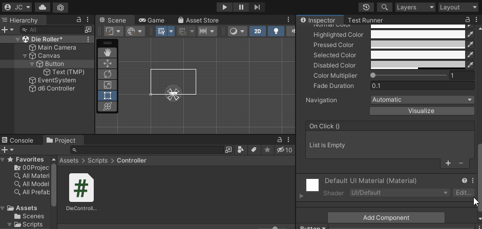
This registers the d6 Controller to listen for button clicks. All that is left to do is specify what it should do when the button is clicked.
- Click the drop down menu that is labeled
No Function - Select
DieController>Roll()
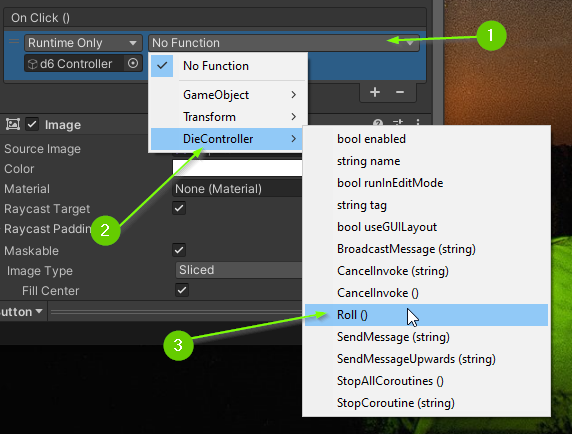
By doing this, we have specified that we would like the Roll() method to be invoked anytime the button is clicked.
Test it out
Whew! That was a lot of work!
- Click the
Runbutton to launch the scene - Click the
Roll Die!button - Open the
Consolepanel
If all went well, you should see the output of the Debug.Log in your console.
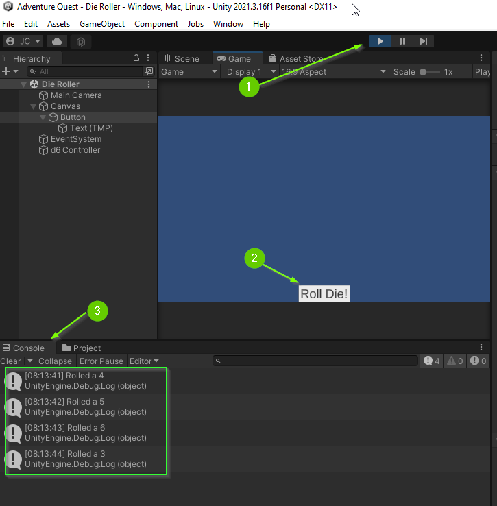
10. Generalizing the DieController
Alright! We are now able to roll a 6 sided die. But we want to do be able to roll dice of all shapes and sizes!
To do this, we will add a int Sides property to our DieController that will specify how many sides the underlying die should be initialized with. Additionally, we will expose that property to the Inspector panel so we can set it in the editor.
- Update the
DieControllerclass to have aSidesproperty that has aprivate setand initialized to6. (Don’t forget to update your constructor)
public class DieController : MonoBehaviour
{
public int Sides { get; private set; } = 6;
private Die _die;
void Start()
{
_die = new Die(Sides); // <-- This line changed!
}
public void Roll() { // omitted for brevity }
}
Because Sides should never change, we use private set to ensure that no one changes it later. Unfortunately, this means that the Inspector cannot see it. However, there is a work around! Unity provides a [field: SerializeField] attribute which allows us to modify a field in the Inspector without exposing it as public to the rest of the program.
- Add the
[field: SerializeField]attribute to theSidesproperty.
public class DieController : MonoBehaviour
{
[field: SerializeField]
public int Sides { get; private set; } = 6;
// omitted for brevity
}
Now, if we view the DieController in the inspector, we can adjust the number of sides the Die will initialize with.
- Select the
d6 Controllerin theHierarchypanel - In the
Inspectorfind theDie Controllercomponent - Update the
Sidesfield to be 20
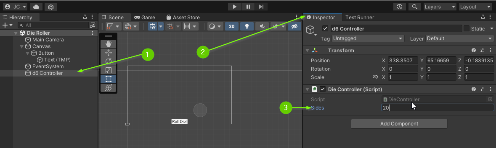
Test it Out
- Click the
Runbutton to launch the scene - Click the
Roll Die!button - Open the
Consolepanel
If all went well, you should now see a new set of numbers being rolled!
Note: You can set the Sides property to be invalid in the editor. However, because we added in an ArgumentException during construction, the console will report an error immediately when the game is launched. By failing fast, we are more likely to be able to identify this bug quickly
Good Time to Commit
Now would be a good time to make a git commit. You just finished a feature. More specifically, you just implemented a simple DieController. Before committing, be sure you save your Die Roller scene (Unity doesn’t auto save for you).
Challenge: Create a Set of Dice
Using everything you’ve done so far, can you create a set of Table Top Role Playing Game Dice? The set should include a d4, d6, d8, d10, d12, and d20.
For organization purposes, you should create a parent GameObject for all of your dice buttons as well as all of your dice controllers.
Read the Manual: Research the Horizontal Layout Group. Can you utilize it to position your buttons evenly along the bottom of the screen?
When you’re finished, your Hierarchy should match this one:
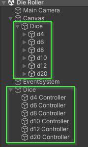
And your scene should look similar to this:
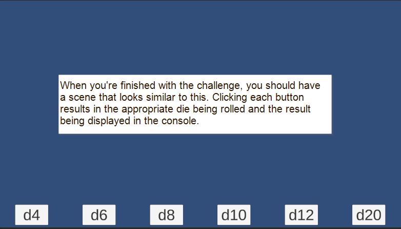
What’s Next?
Once you’ve added in several dice buttons, it’s time to get the information displaying on the screen. To do this, we will learn how to create our own UnityEvents. When you’re ready, proceed to Chapter 3: Adding an OnRoll Event.
Join the Discussion
If you're stuck, have questions, or want to provide feedback, you can do so below. However, I ask that you please refrain from posting complete solutions to any of the challenges.
Before commenting, you will need to authorize giscus. Alternatively, you can add a comment directly on the GitHub Discussion Board.